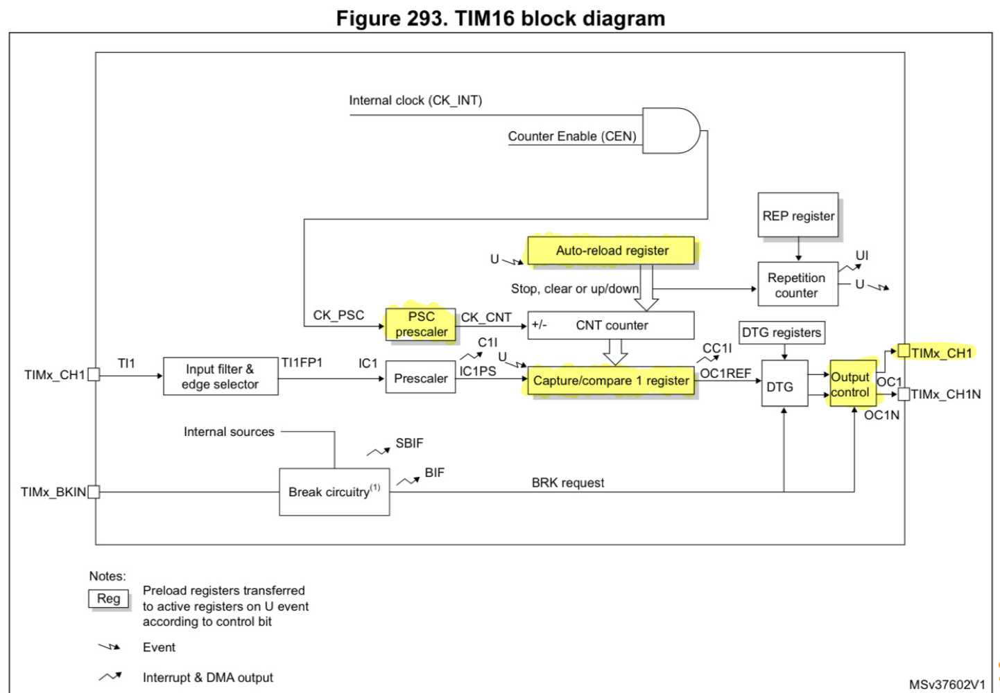
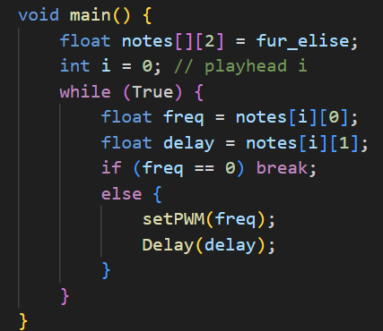

Lab 4: Digital Audio
Time Spent: 13 hours
DEMO: Fur Elise
DEMO: Thunderstruck
Main Goals
This week, I was tasked to design and build a solution to play melodies from a speaker. The main hurdle was the low-level implementation of drivers for on-board peripherals.
Design
To play melodies, you need a way to generate tone and a way to control the duration of this tone. The STM32L432KC MCU we’re using has several on-board peripherals including 11 timers. These timers are widely configurable and can operate at a wide range of frequencies (MHz - minutes). For this project, I chose to use the general-purpose timers 15 and 16—one to generate settable frequencies between 60 Hz and 1000 Hz and another to generate settable delays between 0.5 ms and 30s.
The block diagram below shows how the clock can be configured. The counter is the main part of the clock which ticks up every CK_CNT. The frequency of CK_CNT is equal to the internal clock (CK_INT) divided by the value in the prescaler (PSC prescaler). The auto-reload and capture/compare always check the values of the counter. When the counter reaches the value in the auto-reload register (ARR), the counter is reset and an update signal is generated. If the counter reaches the value in the capture/compare register (CCR), an update signal is generated (note, this will only happen if CCR < ARR). The timers can be configured such that an output pin can be driven directly from a signal generated by the capture/compare register that goes high when CNT>CCR. These clocks allow generation of a PWM signal with a duty cycle which can be set in software equal to (1-CCR)/ARR that is sent directly to an output pin.

The system clock into both of the timers was set to 4MHz. The prescaler, counter, auto-reload, and capture/compare are all 16-bit values (1 - 65,536).
Frequency Timer
The frequency timer (TIM16) is required to produce frequencies down to 80Hz, but with a prescaler of 1 (CK_CNT = CK_INT = 4MHz), the auto-reload can be set to produce values between 60.03Hz and 4MHz.
min freq = 4MHz/1 = 4MHz || max freq = 4MHz/(2^16-1) = 60.03Hz, where freq = CK_CNT / ARR (counter is blocked when ARR = 0)
In software, the ARR is set to a calculated value to achieve the required frequency and CCR is set to ARR/2 to get a 50% waveform.
Since F = CK_CNT / ARR, ARR = CK_CNT / F = 4MHz / F, where F is given by the song data.
ARR can only be an integer, so there is some error in the output frequency due to rounding. The difference between possible frequencies gets smaller as ARR increases. So, for higher frequencies, the error will be greater than for smaller frequencies. I calculated the maximum possible error for a given frequency around 1000Hz (the maximum required frequency for this lab) to ensure it is under the 1% tolerance required. The maximum possible error in frequency at ~1000Hz is half of the difference between achievable frequencies since a frequency between allowed frequencies will either be rounded up or down. Using the equation, we can find that ARR = 4000 for F = 1000 Hz. So I compared the frequencies from ARR = 4000 and 4001 to find the error. I also calculated the error at around 80Hz (ARR = 50000) out of curiosity.
max error @~1000Hz = 1/2 * (4MHz/4000 - 4MHz/4001) = 0.12Hz < 1%*1000Hz
max error @~80Hz = 1/2 * (4MHz/50000 - 4MHz/50001) = 0.0008Hz < 1%80Hz
These calculations confirm that the error is below 1% throughout the frequency range required by the lab.
Delay Timer
For the delay timer, I decided to use CK_CNT = 0.5ms as the base unit, since that is mostly imperceptible and allows for delays up to 32.8s. The math for this was easier in the time domain, so I found the clock period TCK_INT = 1/4MHz = 2.5E-7s. To set TCK_CNT = 0.5ms, I set PSC = TCK_CNT/TCK_INT= 2000. Then, to set a specific delay, ARR = delay/TCK_CNT.
With this configuration, the maximum and minimum delays are as follows:
Tmax = TCNT_CLK*(2^16-1) = 32.7675s || Tmin = TCNT_CLK(1) = 0.5ms
Other Considerations
To make the timers work, the system clock was configured to 4Mz and sent enabled for the required peripherals, and the output GPIO pin was set to take the output value directly from the frequency timer.
main function
The actual code for this project was relatively simple and is included below. I loop through the notes in the song of choice (in this case Fur Elise). The notes are pairs of frequencies and duration. The setPWM function configures the frequncy timer to the desired frequency, and the Delay function configures the delay timer and waits for the desired amount of time. The frequency goes directly to the speaker and the delay is used to time the loop through frequencies with the correct timing.

Testing
I tested this design using the debug feature in Segger. The implementation was at the register level, so using the internal register map included in Segger, I could compare the register values to what I intended. Once I got rid of obvious bugs, I built the circuit and used an oscilloscope to find bugs with the output. The debugging process was made easier by checking with peers and grutors to identify issues with the registers since even with the reference manual, there are still gaps in my understanding of all the registers. I hope to work on this in the next lab, but by using these methods while stepping through my code in the debugger, I was able to make the lab work.
Implementation
The physical implementation of this lab called for an LM386 auditio amplifier to provide higher voltage and current to the speaker than could be achieved. The datasheet included an example design that I slightly modified. The amplification is unimportant since the output is a square wave, so high/low is all I need. I also included a potentiometer on the output to control the speaker’s volume.
![] (images/circuit.png)